Priestranný 3-izbový byt (75 m2) s loggiou po rekonštrukcii - Prešov, Ďumbierska ulica
Prešov
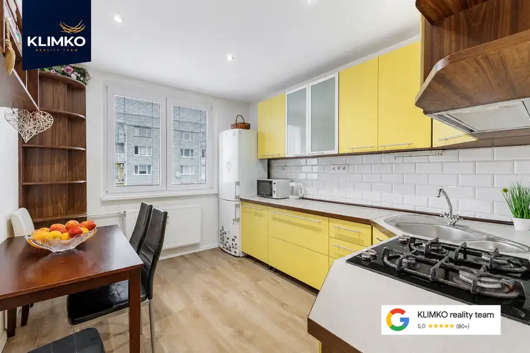
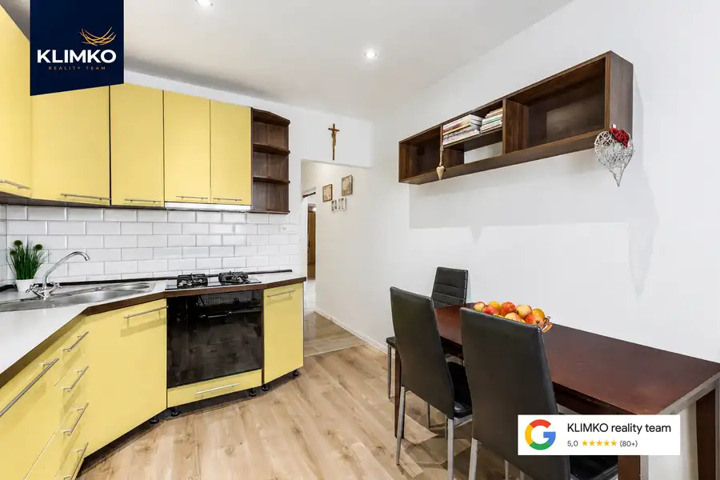
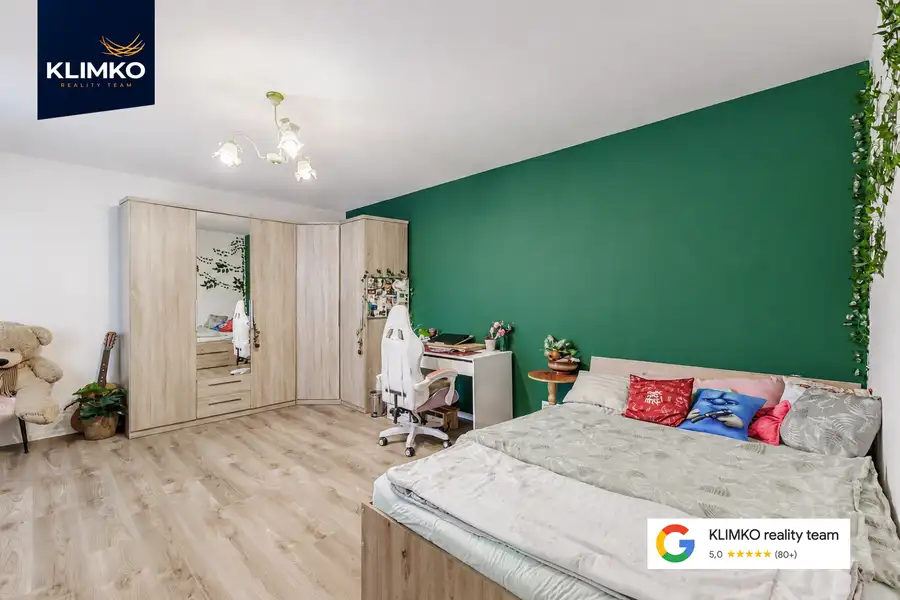
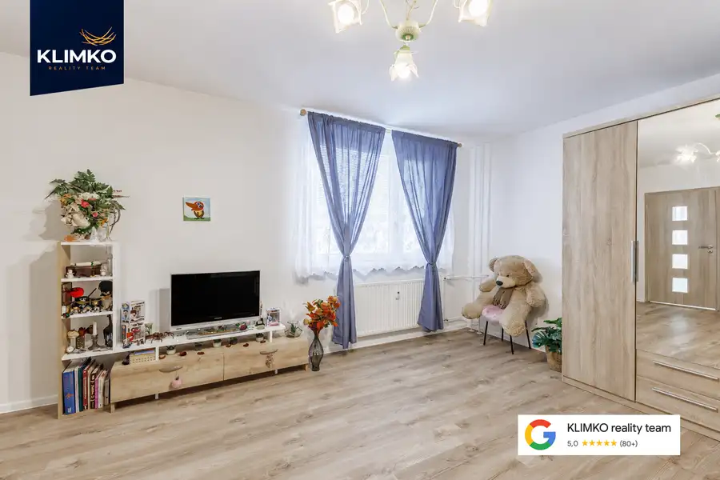
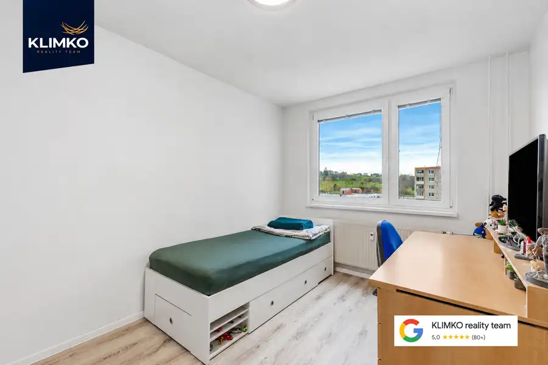
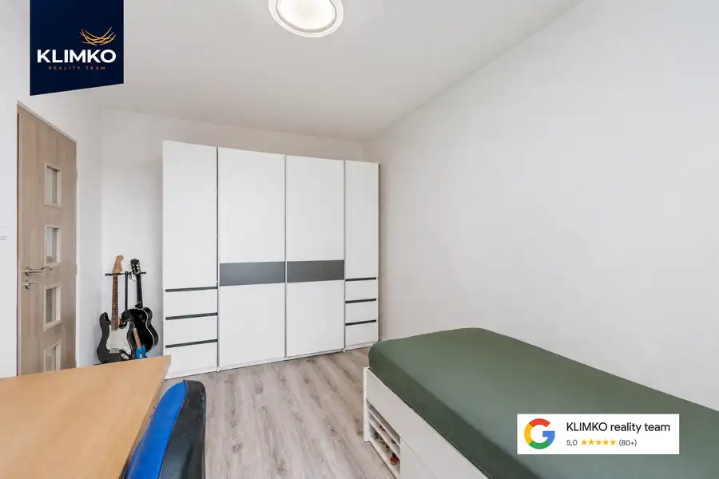
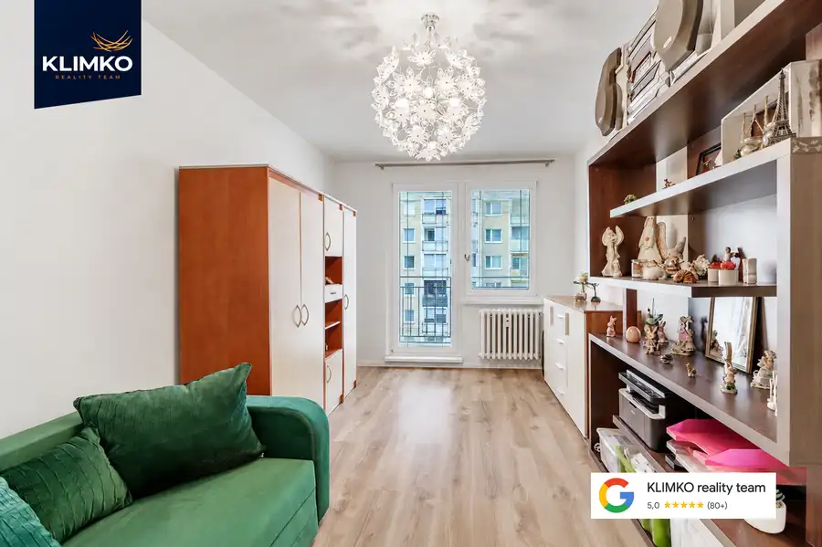
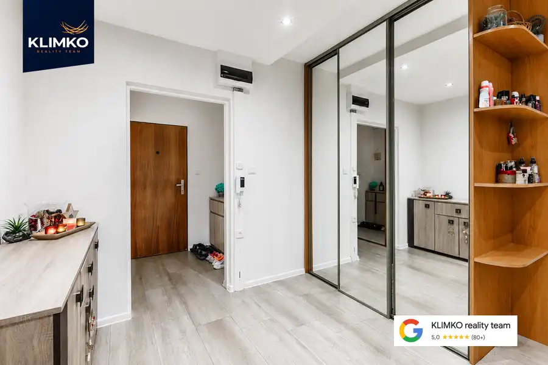
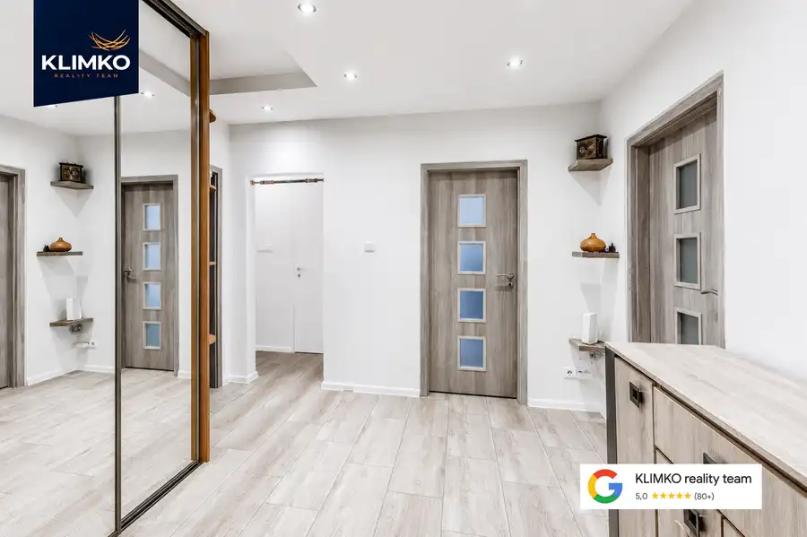
- Dispozícia3-izbový
- Plocha75 m²
- Poschodie6. z 8
- StavKompletná rekonštrukcia
O nehnuteľnosti
Na predaj priestranný 3-izbový byt nachádzajúci sa vo tichej lokalite na sídlisku Sekčov v Prešove, na Ďumbierskej ulici. Byt je po rekonštrukcii, pripravený na bývanie bez nutnosti okamžitých ďalších investícií.ZÁKLADNÉ ÚDAJE: Lokalita: Prešov, sídlisko Sekčov, ul. Ďumbierska Výmera: 75 m2 + loggia Poschodie: 6. poschodie z 8 (s výťahom) Orientácia: Východ / Sever / JuhDISPOZÍCIA: Byt disponuje výborným dispozičným riešením a orientáciou na tri svetové strany, čo zabezpečuje jeho vzdušnosť a presvetlenie.- Obývacia izba: orientácia na Východ- Izba a kuchyňa: orientácia na Sever- Izba: orientácia na JuhSTAV BYTU: V roku 2023 prešla nehnuteľnosť rekonštrukciou, ktorá zahŕňala:- kompletne nové rozvody elektroinštalácie,- znížené sadrokartónové stropy s bodovým osvetlením,- nové plávajúce podlahy v izbách a keramickú dlažbu na chodbe,- novú sanitu a obklady v kúpeľni a na toalete. V byte sa nachádzajú dve priestranné vstavané skrine, ktoré poskytujú dostatok úložného priestoru.LOKALITA A OBČIANSKA VYBAVENOSŤ: Bytový dom je situovaný v strategickej časti sídliska s vynikajúcou občianskou vybavenosťou. V pešej dostupnosti sa nachádzajú nákupné centrá (OC Eperia, OC MAX), supermarkety, zdravotné stredisko, základné a materské školy. Lokalita ponúka výborné dopravné spojenie s centrom mesta a blízkosť zastávok MHD.SPRÁVA A NÁKLADY: - Správcom bytového domu je spoločnosť Spravbyt komfort. - Mesačné náklady sú nastavené pre 3 osoby a predstavujú:Nájomné a fond opráv: 170,-€Elektrina: 31,-€Plyn: 7,-€CENA: 185.000,-€FINANCOVANIE: Možnosť financovania aj prostredníctvom hypotekárneho úveru. Ten vám vyriešime s najlepšími podmienkami na trhu.Cena je konečná a zahŕňa kompletný právny servis spojený s prevodom nehnuteľnosti.V prípade záujmu o obhliadku ma neváhajte kontaktovať.DOHODNITE SI OBHLIADKU: Mgr. Stanislav Klimko, MBA0949 428 547klimko@klimkoreality.skKLIMKO reality team
Parametre
- Bezpečnosť
- Bezpečnostné dvere
- Cena vrátane energií
- Nie
- Doprava
- Cesta, MHD, Cyklistická infraštruktúra, Trolejbus
- Druh
- 3 izbový byt
- Dátum zverejnenia
- 24. 11. 2025
- Energetický certifikát budovy
- nie je
- Orientácia
- Východná, Južná, Severná
- Podlažie
- 6
- Počet lodžií
- 1
- Počet nadzemných podlaží
- 8
- Počet pivníc
- 1
- Príprava teplej vody
- Súbežne s ÚK
- Rok výstavby
- 1996
- Stav nehnuteľnosti
- Kompletná rekonštrukcia
- Telekomunikácie
- Optická sieť
- Typ
- Predaj
- Typ konštrukcie
- Panelová
- Vybavenie
- Lodžia, Pivnica, Verejné parkovanie, Výťah
- Vykurovanie
- Ústredné
- Zdroj tepla
- Teplo z kotolne
- Úžitková plocha
- 75 m²
Kde to je


Mohlo by Vás zaujímať
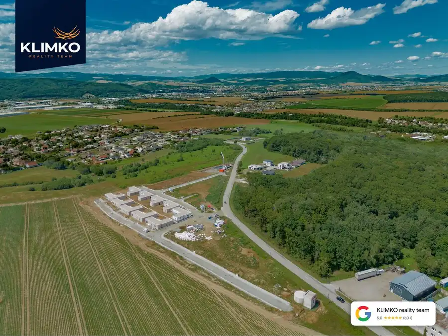
PozemokNové 130 707 €POSLEDNÝ POZEMOK! Stavebné pozemky Záborské – Ideálna investícia len 2 km od Prešova. Prešov 700 m²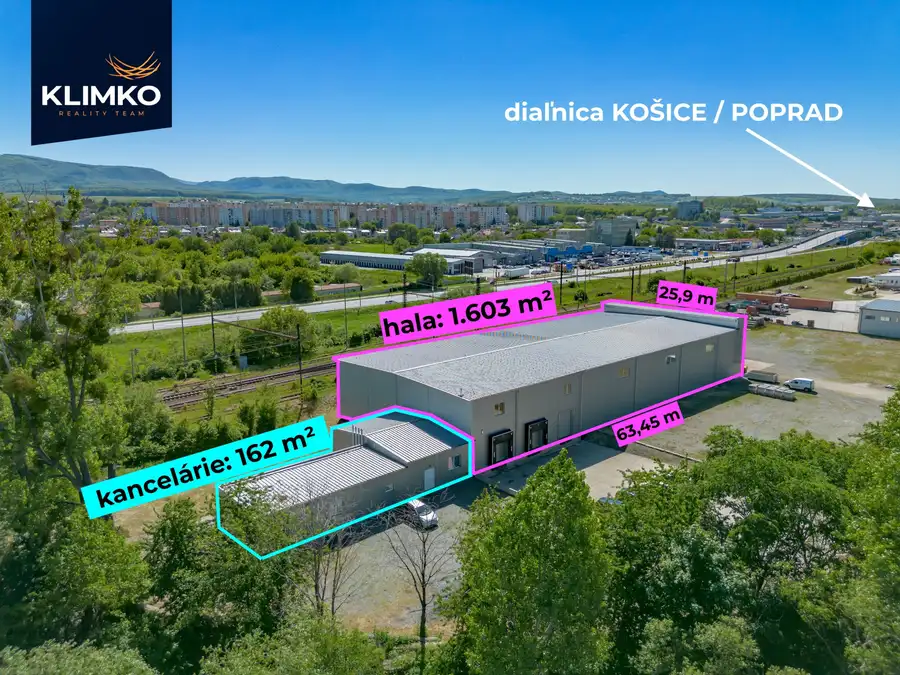
Komerčné priestoryNové Cena na vyžádáníVýrobná a skladová hala v Prešove na košickej ulici Prešov 1603 m²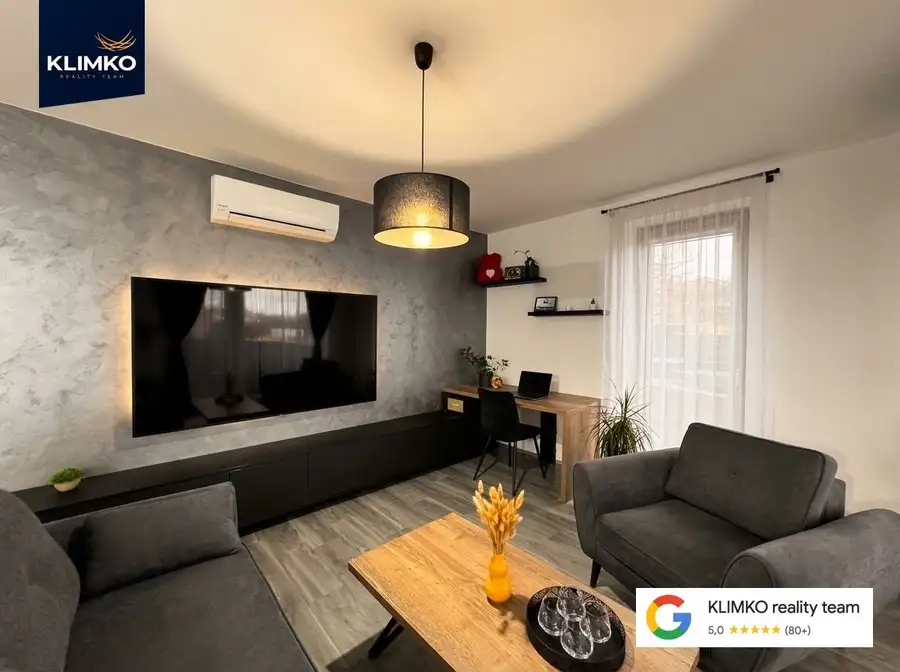
BytNové Cena na vyžádáníExkluzívny 2-izbový byt s dvoma balkónmi – Viladomy Ľubotice, Prešov Ľubotice 2-izbový62 m²2. podlažie